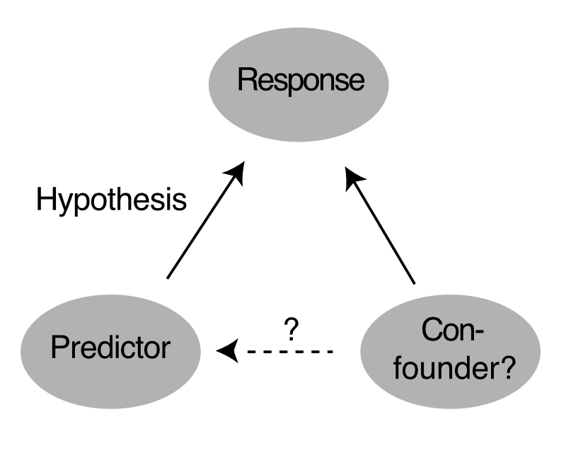

Introduction
The following chapters will be devoted to the four types of statistical analysis: descriptive statistics, inferential statistics, predictive statistics and experimental design. Before we go into these topics, however, we need to discuss how data arises, and how we represent it.
Link to the UR GRIPS course here (requires UR account)
Sample, population, and the data-generating process
The very reason for doing statistics is that the data that we observe is somehow random. But how does this randomness arise?
Imagine that we are interested in the average growth rate of trees in Germany during two consecutive years. Ideally, we would measure them all and be done, without having to do statistics. In practice, however, we hardly ever have the resources to do so. We therefore have to make a selection of trees, and infer the growth rate of all trees from that. The statistical term for all the trees is the “population”, and the term for the trees that you have observed is the “sample”. Hence, we want to infer properties of the population from a sample.
The population is the set of all observations that you could have made. The sample is the observations that you have actually made.
The population as such is fixed and does not change, but every time we observe a random selection (sample) of the population, we may get elements with slightly different properties. As a concrete example: imagine we have the resources to only sample 1000 trees across Germany. Thus, every time we take a random selection of 1000 trees out of the population, we will get a slightly different average growth rate.
Sampling creates randomness.
The process of sampling from the population does explain how randomness arises in our data. However, a slight issue with this concept is that it does not match very well with more complex random processes. Imagine, for example, that data arises from a person going to randomly selected plots to measure radiation (which varies within minutes due to cloud cover), using a measurement instrument that measures with some random error. Does it really make sense to think of the data arising from sampling from a “population” of possible observations?
However, not all randomness comes from sampling from a population.
A more modern and general concept to describe how data is created is the concept of the “data-generating process”, which is pretty self-explanatory: the data-generating process describes how the observations from a random sample arise, including systematic and stochastic processes. It therefore includes the properties of what would classically be called “sampling from a population”, but it is broader and includes all other processes that would create systematic and random patterns in our data. In this picture, instead of inferring properties of the population from a sample, we would say we want to infer the properties of the data-generating process from a sample of observations created by this process.
A more modern concept that replaces the “population” is the “data-generating process” The data-generating process describes how the observations from a random sample arise, including systematic and stochastic processes.
Whether you think in populations or data-generating processes: the important point to remember from this section is that there are two objects that we have to distinguish well: on the one hand, there is our sample. We may describe it in terms of it’s properties (mean, minimum, maximum), but the sample is not the final goal. Ultimately, we want to infer the properties of the population / data-generating process from the sample. We will explain how to do this in the next sections, in particular in the section on inferential statistics. Before we come to that, however, let us talk in a bit more detail about the representation of the sample, i.e. the data that we observe.
Representation and classes of data
A typical dataset consists of multiple observations of a number of variables (e.g. temperature, precipitation, growth). You can think of this situation as a spreadsheet where the columns are the variables and the rows are the observations. Of course, there are other data structures, but this is the most common one.
Usually, this data will contain one variable that is our focus, meaning that we want to understand how this variable is influenced by other variables.
The response variable is the variable for which we try to understand how it responds to other factors.
We call this variable the response variable (sometimes also the dependent variable or outcome variable), because we are interested if and how this variable of interest varies (responds, depends) when something else changes. The variables that affect the response could be environmental factors (e.g. temperature), treatments (fertilized vs. non fertilized), or anything else.
The predictor variables are those that affect the response.
Those other variables that affect our response are called predictor variables (synonymous terms are explanatory variables, covariates or independent variables).
The most common case is that the response variable is a single variable (e.g. a single number or a categorical outcome), and we will concentrate on this case. However, there are cases when the response has more than one dimension, or when we are interested in the change of several response variables at a time. The analysis of such data is known as multivariate statistics. We will not cover these methods here; find some further links here.
Multivariate statistics deal with response variables that have several dimensions, such as species composition.
Another important distinction is the type of each variables independent of whether we are speaking about the response or the predictor, we distinguish:
Variables can be continuous, discrete or categorical. Categorical variables can be ordered, unordered, or binary.
- Continuous numeric variables (ordered and continuous / real), e.g. temperature
- Integer numeric variables (ordered, integer). An important special case of those are count data, i.e. 0,1,2,3, …
- Categorical variables (e.g. a fixed set of options such as red, green blue), which can further be divided into
- Unordered categorical variables (Nominal) such as red, green, blue
- Binary (Dichotomous) variables (dead / survived, 0/1)
- Ordered categorical variables (small, medium, large)
It is important that you record the variables according to their nature. And if you use a statistics software, you have to make sure that the type is properly recognized after reading in the data, because many methods treat a variable differently if it is numeric or categorical.
Check that your variables have the right type after reading them in in your statistics software.
Experience shows that there is certain tendency of beginners to use categorical variables for things that are actually continuous, e.g. by coding body weight of animals into light, medium, heavy.
Don’t use categorical variables for things that can also be recorded numerically! The justification stated is often that this avoids the measurement uncertainty. In short: it doesn’t, it just creates more problems. Don’t use categorical variables for things that can also be recorded numerically!
Let’s come back to one of the first point in this script: the data. If we have to collect data ourselves, we have to answer a number of questions. Which variables should we collect? At which values of those variables should we collect data? And how many replicates do we need?
Selection of variables
In a practical setting, we are typically interested in how a response is affected by a number of predictor variables. Clearly, we need to measure both response and this predictors of interest across a few of those predictor values to say something about the effect of the predictors. If we only wanted to know whether there is a correlation between predictors and response, our list of variables would be complete at this point. However, typically, we want to know not only if there is a correlation, but also whether we can say with some confidence that this correlation is causal. If we want to make this claim, we have to exclude that there are confounding factors, also called confounding variables.
Correlation is not causality. For suggesting causality, we have to exclude confounding effects.
What is a confounding variable?
Imagine we are interested in a response A, and we have hypothesized that \(A~B\). Imagine there is a second predictor variable C that has an influence on A, but in which we are not interested in for the purpose of the question under consideration. Such a variable that is not of interest for the question is also called “extraneous variables”. So we also have A~C, but we are not interested in this relationship. If we now take data, and don’t measure C, it’s usually not a bit problem as long as C is uncorrelated with B - it might create a bit more variability in the response, but by and large the effect of C should average out and we should still be able to detect the effect of B.
An extraneous variable is a variable that can influence the response, but is not of interest for the experimenter

The problem of confounding appears when the extraneous variable C is for some reason correlated with the predictor variable of interest B. In that case, if we only measure B, we see both the effect of B and C. In this case, we may attribute the effect of C on A wrongly to the effect of B on A.
A confounding variable is an extraneous variable that correlated to both the response and a predictor variable of interest.
A spurious correlation is a correlation that is caused by a confounding variable.
A correlation that is caused by an unmeasured confounding variable is called a spurious correlation.
Dealing with confounders is a central part of this course.